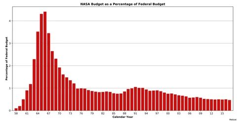
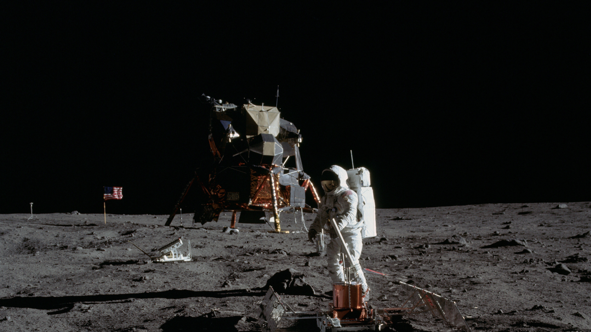
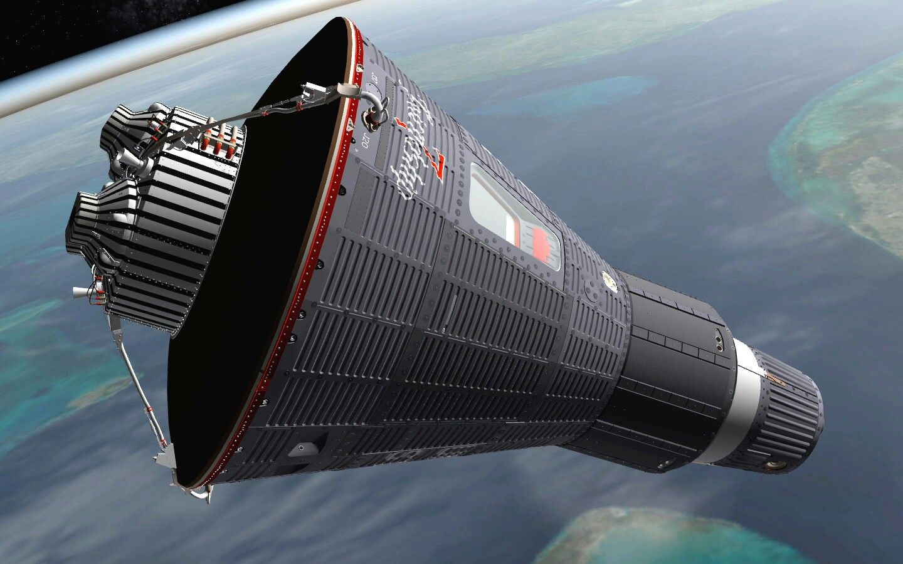
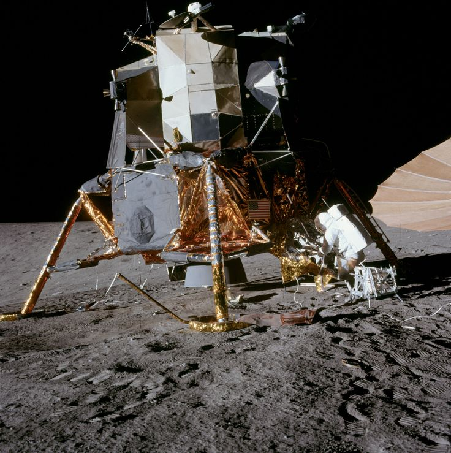
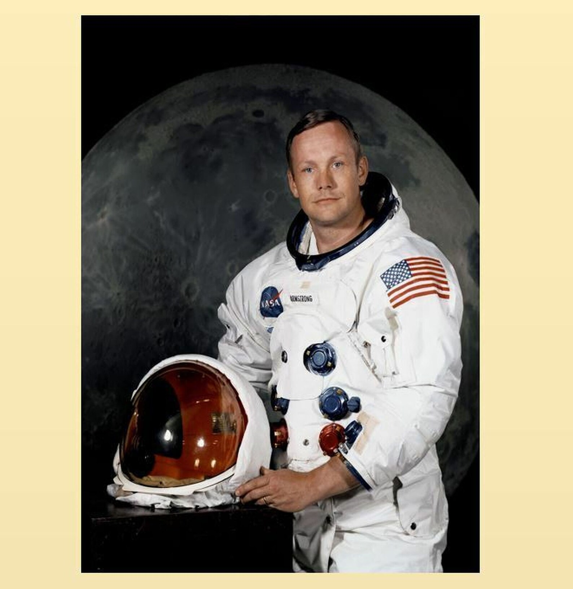
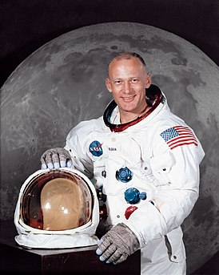
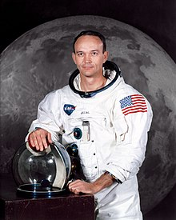

Описание
Современную космологию, астрофизику и аэронавтику невозможно представить без космического агентства NASA. С деятельностью этой организации, название которой зашифровано аббревиатурой четырех начальных букв N – National, A – Aeronautics, S – Space и A- Administration, далее NASA, тесно связана история освоения космоса. Название этой организации стало настоящим брендом, с которым ассоциируются самые смелые, самые грандиозные успехи и достижения человеческой цивилизации в сфере освоения космоса..
Создание NASA – ответ на политический вызов
Национальное Управление по аэронавтике и исследованию космического пространства, коротко NASA, было создано 1 октября 1958 года. Это событие стало вынужденным политическим жестом, на который пошли Соединенные Штаты Америки в ответ на запуск в Советском Союзе первого искусственного спутника Земли.
До этого времени в США всей авиацией и ракетной программой занималось другое ведомство – NACA – специальный Национальный Комитет, созданный при правительстве США еще в 1915 году. Правительственная организация ведала всеми работами в этом направлении, однако не обладала ни необходимыми полномочиями, ни той координацией действий, которая требуется при организации и проведения масштабных научных и технических исследований. Под эгидой комитета велись работы по созданию первого сверхзвукового самолета и баллистических ракет. В области ракетостроения американцы, как и Советы, старались использовать захваченные трофейные наработки ракетостроителей Третьего Рейха. Намечалась нешуточная космическая гонка, вылившаяся в грандиозное противостояние США и СССР в области ракетостроения и в освоении космического пространства.
История NASA началась в послевоенные годы. В сложившихся политических условиях требовалось иметь организованную производственную структуру, способную быстро реагировать на вызовы времени. Создавая новую структуру, подотчетную правительству Соединенных Штатов, в Белом Доме надеялись в корне изменить сложившееся положение в аэронавтике и в области исследования космоса. В итоге, 1 октября 1958 года 34-й президент США Дуайт Эйзенхауэр подписал указ о создании в США Национального Агентства по Аэронавтике и Исследованию космического пространства – государственной структуры, деятельность которой будет целиком и полностью посвящена космическим исследованиям.
Дуайт Эйзенхауэр и НАСА.
Бюджет

НАСА обладает самым большим бюджетом среди всех мировых космических агентств. С 1958 по 2008 годы НАСА истратила на космические программы (с учётом инфляции) около 810,5 млрд $.
С момента своего создания Соединенные Штаты потратили на НАСА почти 650 миллиардов долларов США (в номинальных долларах)
Космические программы

За всё время NASA совершило множество космических программ, самые известные из них:
Меркурий

«Меркурий» (англ. Mercury) — первая пилотируемая космическая программа США, а также название серии космических кораблей, использовавшихся в этой программе.
Генеральный конструктор корабля — Макс Фажей[en]. Подрядчик — McDonnell Aircraft Corporation. Начало разработки — январь 1959 года.
Для полётов по программе «Меркурий» был создан первый отряд астронавтов НАСА. Выполнено шесть пилотируемых полётов (два суборбитальных и четыре орбитальных). Общее время пилотируемых полётов по программе составило более двух суток.
Аполон

Програ́мма «Аполло́н» — программа пилотируемых космических полётов космического агентства США НАСА, принятая в 1961 году, с целью осуществления первой пилотируемой высадки на Луну, и завершённая в 1975 году.
Цель программы была сформулирована президентом США Джоном Ф. Кеннеди в его речи 12 сентября 1962 года[1], и она была успешно решена 20 июля 1969 года, в ходе полёта «Аполлона-11» с высадкой на Луну Нила Армстронга и Базза Олдрина. Всего по программе «Аполлон» были совершены 6 успешных высадок астронавтов на Луну (последняя — в 1972 году). Эти шесть полётов по программе «Аполлон» на данный момент — единственные за всю историю человечества, когда люди высаживались на другом астрономическом объекте.
Программа «Аполлон» была третьей программой пилотируемых космических полётов, принятой НАСА. В этой программе использовались космический корабль «Аполлон» и серия ракет-носителей «Сатурн» (позднее были использованы и для программы «Скайлэб» и участвовали в советско-американской программе «Союз — Аполлон»; эти более поздние программы рассматриваются как часть полной программы «Аполлон»).
В ходе выполнения программы произошли две крупные аварии. Первая — пожар во время наземных испытаний на стартовом комплексе (после пожара сгоревший корабль получил название «Аполлон-1»), в результате которого погибли три астронавта — В. Гриссом, Э. Уайт и Р. Чаффи. Вторая произошла во время полёта корабля «Аполлон-13»: в результате взрыва бака с жидким кислородом и выхода из строя двух из трёх батарей топливных элементов высадка на Луну была сорвана, астронавтам с риском для жизни удалось вернуться на Землю.
Программа внесла большой вклад в историю пилотируемой космонавтики. Она остаётся единственной космической программой, в ходе которой были осуществлены пилотируемые полёты за пределы низкой земной орбиты. «Аполлон-8» был первым пилотируемым космическим кораблём, вышедшим на орбиту другого астрономического объекта, а «Аполлон-17» — это последняя на сегодня пилотируемая высадка на Луну. Программа «Аполлон» и высадка на Луну часто упоминаются как одни из величайших достижений в истории человечества[2][3].
Экипаж
Нил Армстронг, командир;
Армстронг

Эдвин Э. Олдрин-младший, пилот лунного модуля;
Эдвин

Майкл Коллинз, пилот командного модуля
Майкл
